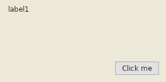
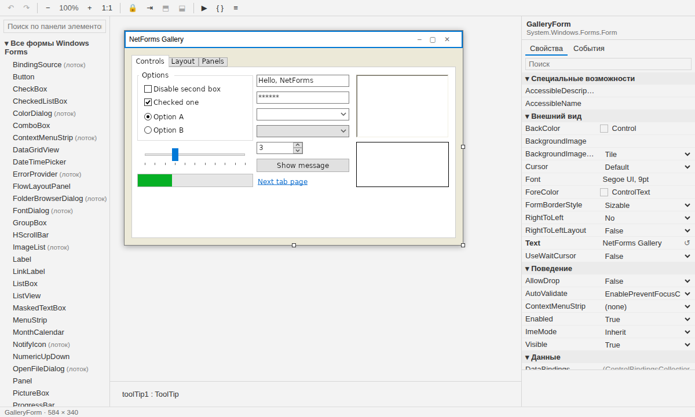
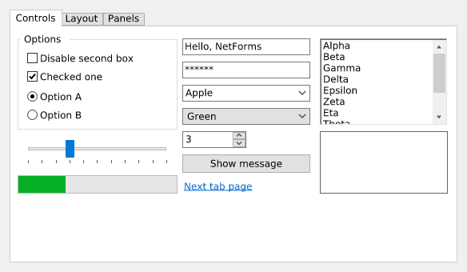

NetForms — это Windows Forms для .NET 10, одинаково работающий на Windows и Linux.
Те же пространства имён, тот же Application.Run(new MainForm()), тот же
InitializeComponent(). Меняется файл проекта, а не код.
WinForms-проект на Linux падает дважды. Потом вы правите один файл.
Собрать
$ dotnet build
error NETSDK1100: To build a project
targeting Windows on this operating
system, set the EnableWindowsTargeting
property to true.
Заставить
$ dotnet run -p:EnableWindowsTargeting=true
You must install or update .NET
to run this application.
Framework: 'Microsoft.WindowsDesktop.App'No frameworks were found.
Проект ровно в том виде, в каком его создаёт Visual Studio, после netforms-convert --apply:
собран из пакетов NuGet и запущен под X11. Ни одна строка C# не менялась. netforms-convert
переводит и проекты .NET Framework 4.x и заранее говорит, что не перенесётся, — с файлом и строкой.
«Злой csproj» — эта история в виде сценария короткого ролика.

HelloForms, Ubuntu 24.04, .NET 10
Рисует NetForms, проектируется в VS Code
Ваши контролы, ваш дизайнер.
Каждый контрол NetForms рисует сам через SkiaSharp, поэтому форма выглядит одинаково на обеих системах.
Avalonia 12 делает только то, что делал Win32: окна, ввод, IME, буфер обмена, системные диалоги файлов, DPI.
Расширение VS Code открывает любой *.Designer.cs как холст и записывает его так же, как Visual Studio.

NetForms Designer: панель элементов, лоток компонентов, свойства и события, линии привязки. Работает без сети, интерфейс на русском.

Витрина контролов. Эталонное изображение теста совпадает по пикселям на Windows и Linux.
Превью 0.1 · измерено, а не на глаз
Насколько это WinForms?
Каждое число — результат теста в CI: API сверяется с эталонными сборками настоящего WinForms, поведение
сравнивается с ним на Windows, реальные проекты переводятся и собираются.
633 / 1254типов WinForms и System.Drawing с полным API; ещё 164 — частично
381 / 381тестов проходят; раскладка, порядок событий и метрики текста сверяются с настоящим WinForms
7 / 7рабочих приложений на .NET Framework 4.8 переводятся и собираются без ручных правок
27 / 45открытых WinForms-проектов переводятся и собираются без ручных правок